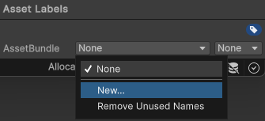

On-demand resources (ODR) is a feature available for iOS and tvOS that lets you reduce the size of your application. The reduction occurs by separating the core assets needed from the application startup from assets that are optional or appear in later parts of your game. These additional Assets, known as AssetBundles, are available across all Unity build targets. However, you must take extra steps to enable them for hosting on the App Store.
AssetBundles can contain Asset files such as models, materials, textures, and scenesA Scene contains the environments and menus of your game. Think of each unique Scene file as a unique level. In each Scene, you place your environments, obstacles, and decorations, essentially designing and building your game in pieces. More info
See in Glossary, but they can’t include scriptsA piece of code that allows you to create your own Components, trigger game events, modify Component properties over time and respond to user input in any way you like. More info
See in Glossary. For this reason, store your scripting logic in the main application. The recommended best practice is that an AssetBundle is at most 64MB in size. This helps to reduce load time and minimizes storage space used on the device.
To set up your project to use ODROn-demand resources (ODR) is a feature available for the iOS and tvOS platforms, from version 9.0 of iOS and tvOS onwards. It allows you to reduce the size of your application by separating the core assets (those that are needed from application startup) from assets which may be optional, or which appear in later levels of your game. More info
See in Glossary, use the following steps:
To create an AssetBundle, use the following steps:
Bundles, ODR, and Editor.When creating an AssetBundle, you must assign a tag to identify it when requesting the AssetBundle download. It’s recommended to create a label that matches the bundle’s file name.
To create and assign a tag, use the following steps:

To generate the new AssetBundle file, you must reference the new label in an Editor script. To create an Editor script, use the following steps:
1. Right-click on the Editor folder and select Create > C# Script.
1. Name the new script BuildiOSAssetBundles.
Open BuildiOSAssetBundles.cs and copy in the following code example. In this example, the label textures is used. Change this throughout with the name of your label in lowercase.
Note: This example uses uncompressed bundles, but this isn’t a requirement to use app thinning.
using UnityEngine;
using UnityEditor;
public class BuildiOSAssetBundles : MonoBehaviour
{
[InitializeOnLoadMethod]
static void SetupResourcesBuild( )
{
UnityEditor.iOS.BuildPipeline.collectResources += CollectResources;
}
static UnityEditor.iOS.Resource[] CollectResources( )
{
return new UnityEditor.iOS.Resource[]
{
new UnityEditor.iOS.Resource( "textures", "Assets/ODR/textures" ).AddOnDemandResourceTags( "textures" ),
new UnityEditor.iOS.Resource( "bundle", "Assets/Bundles/bundle.unity3d" ).AddOnDemandResourceTags( "bundle" ),
};
}
[MenuItem( "Bundle/Build iOS AssetBundle" )]
static void BuildAssetBundles( )
{
var options = BuildAssetBundleOptions.None;
bool shouldCheckODR = EditorUserBuildSettings.activeBuildTarget == BuildTarget.iOS;
#if UNITY_TVOS
shouldCheckODR |= EditorUserBuildSettings.activeBuildTarget == BuildTarget.tvOS;
#endif
if( shouldCheckODR )
{
#if ENABLE_IOS_ON_DEMAND_RESOURCES
if( PlayerSettings.iOS.useOnDemandResources )
options |= BuildAssetBundleOptions.UncompressedAssetBundle;
#endif
#if ENABLE_IOS_APP_SLICING
options |= BuildAssetBundleOptions.UncompressedAssetBundle;
#endif
}
BuildPipeline.BuildAssetBundles( "Assets/ODR", options, EditorUserBuildSettings.activeBuildTarget );
}
}
The following line in the previous code sample takes the files tagged with the textures label and creates an AssetBundle file named textures within the Assets/ODR folder:
new UnityEditor.iOS.Resource( "textures", "Assets/ODR/textures" ).AddOnDemandResourceTags( "textures" )
For demonstration purposes, the previous code sample also includes the following line, which adds an AssetBundle called bundle that’s already built - for example, from another project or a third-party vendor:
new UnityEditor.iOS.Resource( "bundle", "Assets/Bundles/bundle.unity3d" ).AddOnDemandResourceTags( "bundle" )
The whole code sample creates a new menu in the Unity Editor menu bar. Go to Bundle > Build iOS AssetBundle to generate the AssetBundles in the ODR folder.
After you generate the AssetBundles, you must load them into the application.
Create a script in the Assets folder called LoadBundle.cs and copy in the following code example. This example script downloads the textures ODR AssetBundle and assigns it the public member of TextureBundle.
using UnityEngine;
using UnityEngine.iOS;
using System;
using System.Collections;
public class LoadBundle : MonoBehaviour
{
public AssetBundle TextureBundle;
void Start( )
{
LoadAssetAsync( "textures", "textures" );
}
public async Awaitable LoadAssetAsync( string resourceName, string odrTag )
{
// Create the request
using(OnDemandResourcesRequest request = OnDemandResources.PreloadAsync( new string[] { odrTag } ))
{
// Wait until request is completed
await request;
// Check for errors
if( request.error != null )
throw new Exception( "ODR request failed: " + request.error );
TextureBundle = AssetBundle.LoadFromFile( "res://" + resourceName );
}
}
}
After you create and load the AssetBundles, you must complete the following steps: